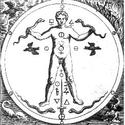
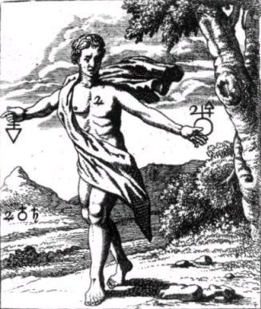

Emblema XIV.
revu le 5 mai 2002
Hic est Draco caudam suam devorans.
(Voici le dragon qui dévore sa queue1.)
Aiguillonné par la sinistre faim, le poulpe
Ronge ses membres, et l’homme se repaît de l’homme.
Tandis que le dragon mord et mange sa queue,
Il a pour aliment une part de lui-même.
Dompte-le par le feu, la faim et la prison ;
Qu’il se mange et vomisse, et se tue et s’enfante2.
Les Anciens ont affirmé que le serpent qui a dévoré un autre serpent devient un dragon, car il exerce sa cruauté sur sa propre race, comme le fait le voleur ou l’assassin. On sait qu’en Afrique il en est de si nombreux et de si gros qu’ils dévorèrent une grande partie de l’armée d’Alexandre. Chez les Asacliéens, peuple de l’Ethiopie, il en naît de très grands, qui, entortillés a la façon de claies, s’efforcent, de leurs têtes dressées, d’atteindre de meilleures nourritures. Les rois des Indes nourrissaient, dit-on, deux dragons, l’un de quatre-vingts, l’autre de quatre-vingt-dix coudées de taille3. Il résulte en outre d’une observation faite par des auteurs de notre époque que l’on rencontre encore des dragons semblables près de l’Angola, et qu’ils peuvent égaler d’énormes mâts de navires. On rapporte de même que des montagnes de l’Inde et de l’Afrique renferment une grande abondance d’or, mais qu’elles sont gardées par des dragons de manière que nul n’atteigne l’or et ne l’emporte. Les dragons en effet se rassemblent au bord des sources et des ruisseaux qui descendent des montagnes et, par la même occasion, ils montent la garde auprès de l’or. C’est pourquoi les philosophes placent tant de dragons et de serpents auprès de leurs trésors, comme la Toison d’or, le Jardin des Hespérides, et aussi auprès d’autres parmi leurs personnages ou sujets chymiques, Cadmus, Saturne, Esculape, Mercure dont le caducée est ceint de deux serpents, mâle et femelle4. Par les dragons ils n’entendent rien d’autre que les sujets chymiques. C’est pourquoi ils déclarent :
" Les montagnes donnent Rebis et des dragons, la terre donne des fontaines. "5
Ils ajoutent que le dragon dévore sa queue, faisant allusion à sa faim extrême. D’autres l’interprètent de l’année qui revient sur elle-même et décrit un cercle, mais cette image fut d’abord appliquée par les philosophes chimiques à leurs sujets. Par ce dragon ils veulent signifier le serpent qui dévore un autre sujet de son espèce et qui est proprement appelé soufre, comme cela est attesté en d’innombrables endroits6. Lulle déclare dans son Codicille au chapitre 31 :
" C’est là le soufre, mon fils, et ce sont la vipère et le dragon qui dévorent leur queue, le lion rugissant et le glaive acéré, qui coupe, tue et brise toutes choses. " 7
Et le Rosaire :
" Le dragon ne meurt pas s’il n’est tué avec son frère et sa sœur. "8
Et un peu plus loin :
" Le dragon est l’argent-vif extrait des corps qui possède en lui corps, âme et esprit. Cette eau reçoit encore le nom d’eau fétide après la séparation des éléments. "9
On raconte que le serpent dévore sa queue parce qu’il absorbe la partie de lui-même qui est mouvante, vénéneuse et humide, si bien que, sans queue, il paraît ensuite plus volumineux et plus lent, car son mouvement et son agilité ont en grande partie leur origine dans sa queue10. Tous les autres animaux s’appuient sur des pattes, mais les serpents, les dragons et les vers de ce genre remplacent les pattes absentes en contractant et en déployant leur corps ; comme l’eau répandue, ils décrivent des cercles déterminés, s’inclinant tantôt d’un côté et tantôt de l’autre, ainsi qu’on peut le voir de la plupart des fleuves qui, à la manière des serpents, infléchissent leur cours et le courbent en cercles. Ce n’est donc pas sans raison qu’ils ont donné à l’argent-vif le nom de serpent et qu’ils ont attribué des serpents à Mercure, puisqu’il semble traîner une queue et qu’il s’élance tantôt d’un côté tantôt de l’autre, avec une masse mouvante. Car comme le serpent se glisse, ainsi fait Mercure qui pour cette raison possède des ailes aux pieds et à la tête. En Afrique, dit-on, les serpents sont ailés et ils dévasteraient tout s’ils n’étaient ravagés par l’ibis11. C’est pourquoi l’ibis est rangé au nombre des images sacrées de l’Egypte en raison à la fois des services manifestes qu’ilrend à tout le pays et d’une propriété cachée compriseseulement de quelques-uns.
On dit que ce dragon, après s’être mordu la queue, rejette sa vieille peau et en reçoit une nouvelle en même temps que la jeunesse, si bien que la nature a concédé une plus grande longévité non seulement aux corneilles, aux corbeaux, aux aigles et aux cerfs, mais aussi à la race des serpents. La fourmi en vieillissant acquiert des ailes, comme aussi de nombreux vers. L’homme, lorsqu’il vieillit, est confié à la terre et, renaissant à partir de la terre, il sera consacré à la vie éternelle. Avec n’importe quel serpent brûlé on fait une poudre qui se révèle très efficace contre tous les poisons. L’on doit faire un antidote à l’aide de ce dragon une fois qu’il a dévoré sa queue (appendice ordinairement amputé chez les vipères), et ce sera un très puissant remède (alexipharmacon) contre les maux de la fortune et du corps12.
Notes1. Voici l'un des arcanes les plus célèbres de toute l'alchimie : le serpent Ouroboros. Depuis le début des écrits sur l'Art sacré jusqu'à Fulcanelli, ce serpent [parfois représenté comme un dragon] est omniprésent. On a voulu y voir toutes sortes d'explications plus fantaisistes les unes que les autres. Ce serpent représente le symbole du Mercure qui se dévore lui-même ; c'est l'équivalent du cygne des Demeures philosophales [DM] de Fulcanelli ave ce phylactère : « je meurs par mes propres plumes ». Et comment le serpent se dévore-t-il lui même ? En se volatilisant sous la pression de sa température. Là git un grand secret qui a mêlé les deux voies ouvertes au début, dans l'histoire de l'Art sacré, où l'on a confondu la voie chimérique des transmutations métalliques, et celle, positive, de la transformation des pierres communes en pierres précieuses [cf. Idée alchimique II]. Remarquez bien les ruines qui sont en arrière plan. elles nous rappellent le temple de Saturne [aerarium, cf. section Gardes du corps].

FIGURE I
(Le Lion d'Or ou le Vinaigre des Sages - De Goude Leeuw, 1675 : les deux serpents)2. Voila une allégorie absolument incompréhensible sans les expériences de synthèse minéralogique par la voie sèche. Lorsque Maier professe de dompter le serpent par le feu, la faim et la prison, il veut signifier que rien d'étranger ne doit être ajouté au vase de nature et que le feu seul, mais à un degré élevé, peut résoudre ce Mercure en le sublimant. Quant à dire qu'il s'enfante, c'est parler de la coagulation de l'eau mercurielle, obtenue par volatilisation progressive, seule possibilité d'obtenir la cristallisation de la masse amorphe dissoute dans le fondant.
3. Diodore de Sicile en parle. Il évoque même le sort d'un serpent géant que, par ruse, on avait pu détourner de sa cachette vers un autre antre qui était un piège. Il faudrait aussi évoquer Cadmus et Hercule [voir en recherche].
4. Nous avons déjà évoqué tout cela maintes fois. Consultez par exemple les sections : Matière - humide radical - Gardes du corps - Fontenay - Artéphius. La seule allégorie que nous n'avons pu encore développer comme elle le mérite est le voyage des Argonautes [il est esquissé à la fin de la section chimie et alchmie]. Rappelons que le signe des Gémeaux est équivalent à Mercure tenant son caducée avec les deux serpents [humide radical].
5. Nous avons dit aussi que le Mixte des deux Soufres se préparait au sommet des montagnes, là où l'air prend une couleur noire et violette. Dans ses Figures Hiéroglyphiques, le pseudo-Flamel cite un livre qui [selon Fulcanelli] n'a jamais existé : le Livre d'Abraham Juif. On y retrouve une montagne environnée de dragons qui y tiennent leurs résidences. Ces dragons permettent la préparation de l'eau des fontaines philosophiques et c'est de cette eau que se nourissent les éléments du Rebis, en un ensemble qui est appelé le Compost.
6. C'est la raison pour laquelle les Sages ont identifié le plomb à leur Mercure, et leur plomb à l'antimoine. La mythologie prétend en effet que Cronos dévora tous ses enfants, sauf un : Jupiter, comme nous l'avons vu dans un autre chapitre [chap. XII] de l'Atalanta fugiens. L'antimoine a la propriété de purifier l'or et l'argent en les séparant - par dissolution - des autres métaux. C'est même pour cela que Newton a vu dans la Calybs des Anciens l'antimoine, parce que disait-il, le Soleil est exalté dans le Bélier et que le Bélier voile Arès, autre nom de l'antimoine [dixit Newton]. Il y eut aussi Artéphius qui commence son Livre Secret par les mots : « l'antimoine est des parties de Saturne...» et que Chevreul traduit par : « Plumbum est ...». Or, qu'il soit fait de plomb ou d'antimoine, le Mercure des Sages est avant tout un fondant à base de potasse. Quant au sujet que dévore le serpent, il s'agit certes du Soufre ; mais c'est pour mieux le revivifier, c'est-à-dire le réincruder, en un corps beaucoup plus noble.
7. De Lulle, vous pouvez lire ici sa Clavicule et l'Elucidation de son Testament, ainsi que de nombreux éléments biographiques. Seul problème : ses ouvrages sont tous supposés. Voyez aussi les passages que lui consacre Chevreul [1,2,]. Lion et glaive [recherche] sont des symboles attachés au dissolvant. Maier parle [chap. VIII] de glaive de feu pour l'opération de la taille de l'oeuf : c'est tout dire.

FIGURE II
(le Lion vert ou Mercure préparé de l'oeuvre - Mylius - Philosophia Reformata)8. Entendez : le dragon est le Mercure ; les frère et soeur sont respectivement Gabricius et Beya. Autrement dit, les éléments du Rebis, corps hermaphrodite ou homme double igné de Basile. Si le dragon meurt, ce ne peut être que par épuisement de sa substance, laquelle se réalise par sublimation, c'est-à-dire évaporation lente. Gabricus et Beya apparaissent alors réincrudés en un corps cristallisé.
9. L'argent vif extrait des corps définit le Compost : les Soufres dissous et le Mercure qui sert de tiers agent, en tant que milieu ou moyen de cette singulière sublimation. C'est la raison pour laquelle Maier en dit que le Corps, l'Âme, mais aussi l'Esprit y sont contenus. Sinon, la phrase est incompréhensible. Quant à l'odeur fétide, il peut s'agit d'une allusion à la phase dite de putréfaction, à moins qu'il ne s'agisse d'eau de soufre ou eau divine [cf. réincrudation], mais cela apparaît peu probable dans ce contexte. C'est donc par l'entendement que cette expression d'eau fétide doit être comprise [sur l'eau fétide, cf. Atalanta, XXXVII et les Entretiens de Morien à Calid]. Pernéty [Dictionnaire mytho-hermétique] en parle comme du Mercure philosophique, ce qui correspond exactement à ce que nous en disons.
10. C'est évidemment affirmer par là la nature essentiellement visqueuse de cette matière complexe qui va, par sublimation, se coaguler progressivement. A propos de la queue du Mercure, Pernéty en distingue de plusieurs types :- Queue de Dragon. C'est, selon Hermès, le mercure des Philosophes en putréfaction.On voit bien que l'un des buts du 3ème oeuvre va consister à tirer le Mercure de l'état de putréfaction où il est placé au début de la Grande coction. C'est la queue du dragon qui nous intéresse ici.
- QUEUE BLANCHE DU DRAGON. Huile du mercure, ou la pierre au blanc, ainsi nommée de ce que la couleur noire est appelée Dragon, et que la blanche lui succède.
- QUEUE ROUGE DU DRAGON. C'est le magistère au rouge, ou le soufre rouge des Philosophes.
- QUEUE DE PAON. Ce sont les couleurs de l'arc-en-ciel, qui se manifestent sur la matière dans les opérations de la pierre. Pour indiquer les couleurs qui surviennent à cette matière, Basile Valentin et plusieurs autres Philosophes ont employé pour symboles successifs, le corbeau pour la couleur noire, le paon pour les couleurs variées de l'arc-en-ciel, le cygne pour la blanche, et le phénix pour la rouge.
- QUEUE DE RENARD ROUGE. Minium.
FIGURE III
((Le Lion d'Or ou le Vinaigre des Sages - De Goude Leeuw, 1675 : la Terre hermétique)La figure III donne à voir le mode d'emploi des idéogrammes planétaires en vue de leur utilisation dans la composition du Rebis. Notez que Jupiter et Saturne doivent concourir à faire du Rebis une sorte de stibine qui ne doit rien à notre trisulfure d'antimoine. De la main droite [à gauche pour le lecteur], le personnage tient un FEU renversé dans lequel on peut voir une stibine où le cercle crucifère est transformé en triangle, signifiant par là que l'Esprit, le Corps et l'Âme doivent être portés au creuset. Dans la main gauche, on voit la même stibine à un stade ultérieur de son développement, lorsque le Soufre est sublimé dans l'Esprit [Jupiter conjoint au Soufre] ; la réincrudation est proche.
11. Pour l'Ibis, voyez la section Lettre aux Vrais Disciples d'Hermès de Limojon de Saint Didier. L'Ibis est étroitement lié à Isis. Voyez la section Chevreul, I. L'Ibis nous intéressse au premier chef : il fut très tôt assimilé au dieu grec Hermès, et de là sont nés les traités syncrétistes et ésotériques attribués à Hermès Trismégiste : nom donné à Thot trois fois grand. Curieusement, le Livre de Job attribue à l'ibis, comme au coq [très sollicité comme symbole, voir recherche] la faculté de prévision : le premier annonce les crues du Nil et le second, le lever du soleil. Chose notable, dès lors que l'on sait que les crues du Nil sont appelées « aigles » par Diodore de Sicile. Et qu'au lever du soleil, brille Eos, c'est-à-dire Lucifer. Nous sommes d'accord avec ceux, avisés, qui ont vu dans l'ibis un oiseau lunaire, à cause de la forme incurvée de son bec. Ce qui va tout à fait dans le sens de l'interprétation de Dom Pernéty [Fables Egyptiennes et Grecques, livre I, chap. X, De l'Ibis]. Enfin, nous aurons garde d'oublier que l'Ibis, par cabale, semble être un symbole de salubrité, ce que signalerait d'ailleurs sa couleur blanche et noire. Chez les Chrétiens, l'ibis devint le symbole du Christ, c'est-à-dire du creuset. Enfin, l'ibis semble avoir un rôle purificateur. Sur le plan de la cabale, c'est donc un agent qui agit par purification, sans doute à l'époque de la transition entre le régime de Saturne et celui de la Lune.
12. Seul le début de ce paragraphe peut être interprété en termes rationnels. On conçoit que ce serpent, c'est le Mercure ; et que la mue du serpent signifie qu'il se sublime en « laissant place à plus jeune que lui ». Le reste du texte est abscons et renvoie peut-être à la notion d'élixir. En ce sens que c'est le Mercure qui est son propre thériaque. D'autre part, il faut rapprocher du thériaque contre le serpent ce qui est dit dans le Damigeron-Evax, inclus dans les Lapidaires Grecs [R. Halleux, J. Schamp, Les Belles Lettres, 1985]. En particulier, au sujet de la pierre hématite, très efficace [chap. IX] contre les morsures de serpent. On aurait tort de croire que cette pierre hématite [aimatithV] est notre colcothar [Fe2O3]. Cette pierre recouvreles Pyramides : c'est du porphyre rouge. Pour d'autres, c'est une pierre friable [euqrubhV].